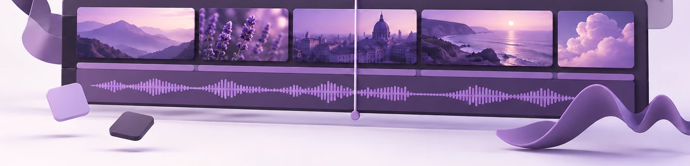

Uma campanha, várias plataformas: encomende tudo de uma vez

A mesma campanha tem agora de funcionar no seu site, num feed do LinkedIn, como reel vertical e, às vezes, num ecrã sem som numa feira. São filmes diferentes. O erro é encomendá-los como trabalhos diferentes.
Como as encomendas separadas se desviam
Encomendadas uma de cada vez, as peças deixam de parecer a mesma campanha. A cor está um pouco mais quente no segundo lote, porque foi feita meses depois noutro monitor. Os títulos usam um tipo de letra que não é bem o da marca. Os reels têm outra música, porque a primeira licença cobria um filme só.
Ninguém sabe dizer o que está mal. Só não se ligam as peças umas às outras, e cada uma tem de o apresentar do zero. Uma campanha pega pela repetição, e isso só funciona se as pessoas reconhecerem a segunda peça como parte da primeira.
O mesmo aspeto, filmes diferentes
O outro erro comum é cortar as versões curtas a partir da longa. A peça de quinze segundos passa a ser a de noventa sem o meio, e quem viu uma viu todas.
As peças devem partilhar a cor, a tipografia, a música e o ritmo, para que se perceba que é sua antes de aparecer o logótipo. O que mostram deve mudar. Uma abre com a fundadora, outra é o produto a ser usado, sem palavras, outra são trinta segundos de processo.
O que tem de ficar decidido no início
- Uma cor e um conjunto de referências.
- Uma licença de música que cubra todos os cortes. Trato eu disso, mas preciso da lista completa de peças quando escolho a faixa.
- Um conjunto de títulos e animação de logótipo, feitos uma vez e reaproveitados.
- Material filmado a saber que vem aí a vertical. Um corte 9:16 perde cerca de 60% de um enquadramento 16:9, sobretudo dos lados. Consigo reenquadrar plano a plano, mas custa um dia e continua a parecer salvo à última hora.
O que sai de um só trabalho
- O filme de marca, de 60 a 120 segundos
- Um trailer, de 30 a 45 segundos, que se aguenta sozinho
- Um teaser, de 10 a 15 segundos
- Três a seis reels, verticais e legendados para ver sem som
- Um corte quadrado para os feeds que ainda o preferem
Há mais dois que saem quase de graça e costumam ser esquecidos: um corte sem som para ecrãs de eventos, e versões em português, inglês e espanhol. Feitos junto com o original são pouca coisa. Feitos um ano depois obrigam a reabrir um projeto de que já ninguém se lembra.
A versão curta
Se o vídeo só vai viver no seu site, encomende um filme. Se vai correr em várias plataformas, encomende a campanha inteira de uma vez. O que a mantém coesa escolhe-se no início e não se acrescenta no fim.
Se está a planear alguma coisa, diga-me o que tem em mente e eu digo-lhe o que pedir. O resto é comigo.
← Todos os artigos